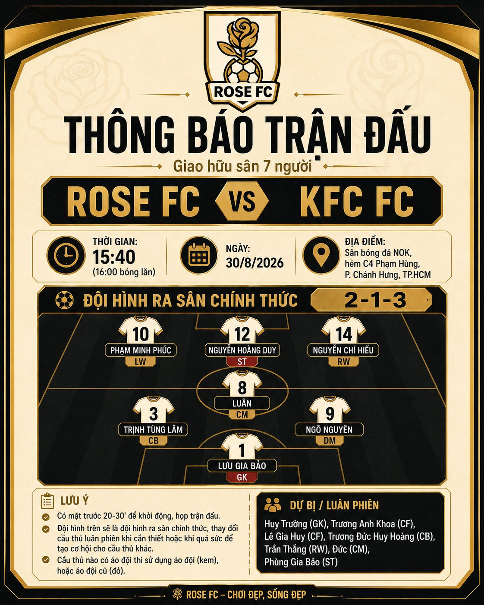
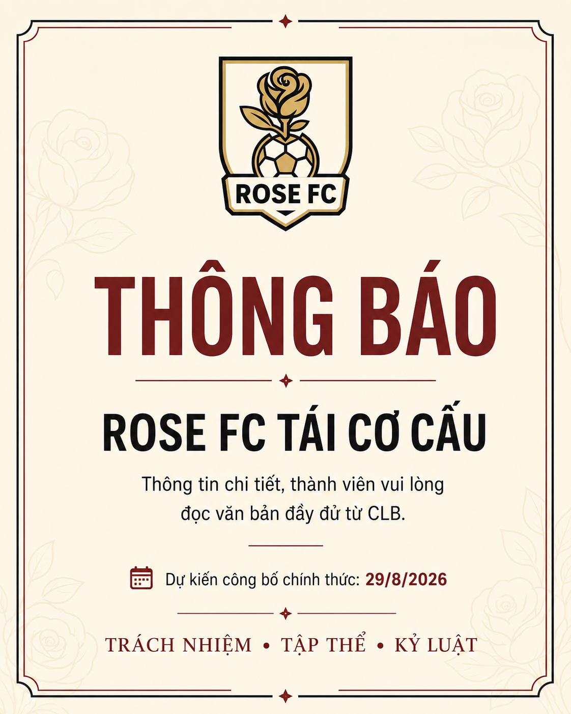
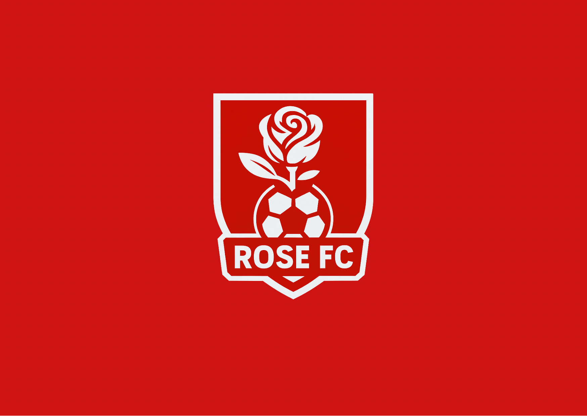
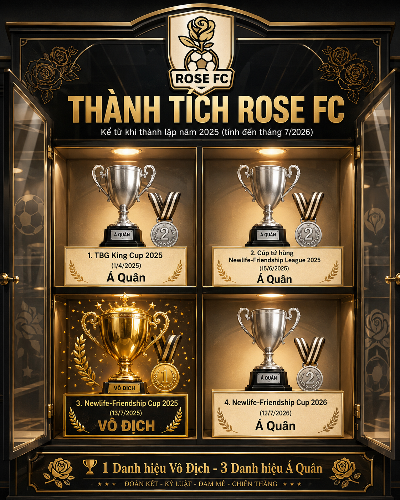

LATEST · MATCH REPORT · 30.08.2026
8–3
Hoàng Duy lập poker trong cơn mưa bàn thắng
Rose FC lội ngược dòng sau bàn thua sớm và khép lại trận giao hữu sân 7 trước KFC FC bằng chiến thắng tám bàn.
ĐỌC MATCH REPORT →Latest from Rose FC
Club · Football · History
Demenino Sport trở thành đơn vị sản xuất áo đấu chính thức
Rose FC xác nhận đối tác trang phục thi đấu cho mùa giải 2026/27.

Trước giờ bóng lăn: Rose FC vs KFC FC
Nhìn lại kế hoạch trước trận giao hữu tại sân NOK.

Rose FC công bố định hướng tái cấu trúc
Trách nhiệm và tập thể trở thành nguyên tắc trung tâm.

Tăng cường sân 7 trước năm 2027
Hướng đến một bộ khung thi đấu thường xuyên và ổn định hơn.

Rose FC đặt mục tiêu gia nhập VGF
Lộ trình gồm ba giai đoạn với cơ chế tự đánh giá.

Trophy Room: những cột mốc đầu tiên
Những thành tích tạo nên giai đoạn nền móng của Rose FC.